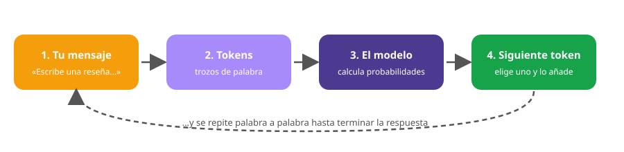

Módulo 5: Cómo funciona un modelo de lenguaje
Datos, entrenamiento, tokens, probabilidades y por qué a veces «alucina».
Un modelo de lenguaje hace una sola cosa: predice la siguiente palabra (en realidad, el siguiente «token») según lo que ya hay escrito. Repitiendo eso muchas veces escribe respuestas enteras. Por eso es creativo, pero también puede inventarse cosas con mucha seguridad.
Por dentro de Claude (y de otros asistentes)
1. Paso 1: el entrenamiento
El modelo se entrena con enormes cantidades de texto. Durante el entrenamiento, cada vez que se le muestra un fragmento, tiene que adivinar la siguiente palabra; si falla, sus conexiones internas (parámetros, miles de millones de números) se ajustan un poquito. Tras hacerlo con billones de palabras, el modelo ha aprendido gramática, datos del mundo, estilos de escritura y hasta cierto razonamiento. Después se le afina con ejemplos de buenas respuestas y con valoraciones de personas para que sea útil y seguro.
2. Paso 2: tu mensaje se convierte en tokens
El modelo no lee palabras como tú, sino tokens: trozos de texto que pueden ser una palabra corta, parte de una palabra larga o un signo. En español, una palabra suele ser de 1 a 3 tokens. El modelo trabaja con números, no con letras.

3. Paso 3: predecir la siguiente palabra
El modelo calcula una probabilidad para cada token posible y elige uno. No siempre elige el más probable: un ajuste llamado temperatura controla cuánto se arriesga. Con temperatura baja, respuestas más previsibles; con temperatura alta, más variadas y creativas. Por eso la misma pregunta puede dar respuestas distintas.
Juega con las probabilidades
Elige la palabra que crees más probable y mira cómo se reparten las probabilidades. Luego genera palabras con la temperatura.
Genera palabras al azar con esta frase.
Con temperatura baja casi siempre sale la palabra más probable; con temperatura alta salen también las raras.
4. La ventana de contexto: la «memoria» de una conversación
El modelo solo «ve» una cantidad limitada de texto a la vez: lo que está en la conversación (tu mensaje, sus respuestas y los documentos que le des). Eso es la ventana de contexto, y se mide en tokens. Las versiones recientes de Claude admiten ventanas muy grandes (cientos de páginas), pero no recuerdan por sí mismas conversaciones antiguas si no se les vuelven a dar o si la aplicación no tiene una función de memoria activada.
5. ¿Por qué se equivoca? Las «alucinaciones»
Como el modelo genera lo que suena probable, a veces produce datos falsos con aspecto de verdaderos: una cita inexistente, un horario inventado, una receta con un ingrediente imposible. Se llama alucinación. Es más probable cuando:
- ⚠️ le preguntas algo muy concreto o poco conocido (un restaurante pequeño, una ley reciente);
- ⚠️ no le das el contexto o el documento con la información;
- ⚠️ le pides números, fechas o citas exactas;
- ⚠️ le haces una pregunta con una premisa falsa y la acepta.
6. Lo que sí hace bien… y lo que no
| Suele hacerlo bien | Hay que vigilarlo |
|---|---|
| Redactar, resumir y reformular textos | Datos exactos, cifras y citas |
| Traducir y adaptar el tono | Información muy reciente (depende de su fecha de conocimiento) |
| Dar ideas y alternativas | Temas legales, médicos o de seguridad alimentaria |
| Explicar conceptos paso a paso | Hechos sobre personas o negocios concretos |
| Ayudar con fórmulas, código y tablas | Cálculos largos (conviene comprobarlos) |